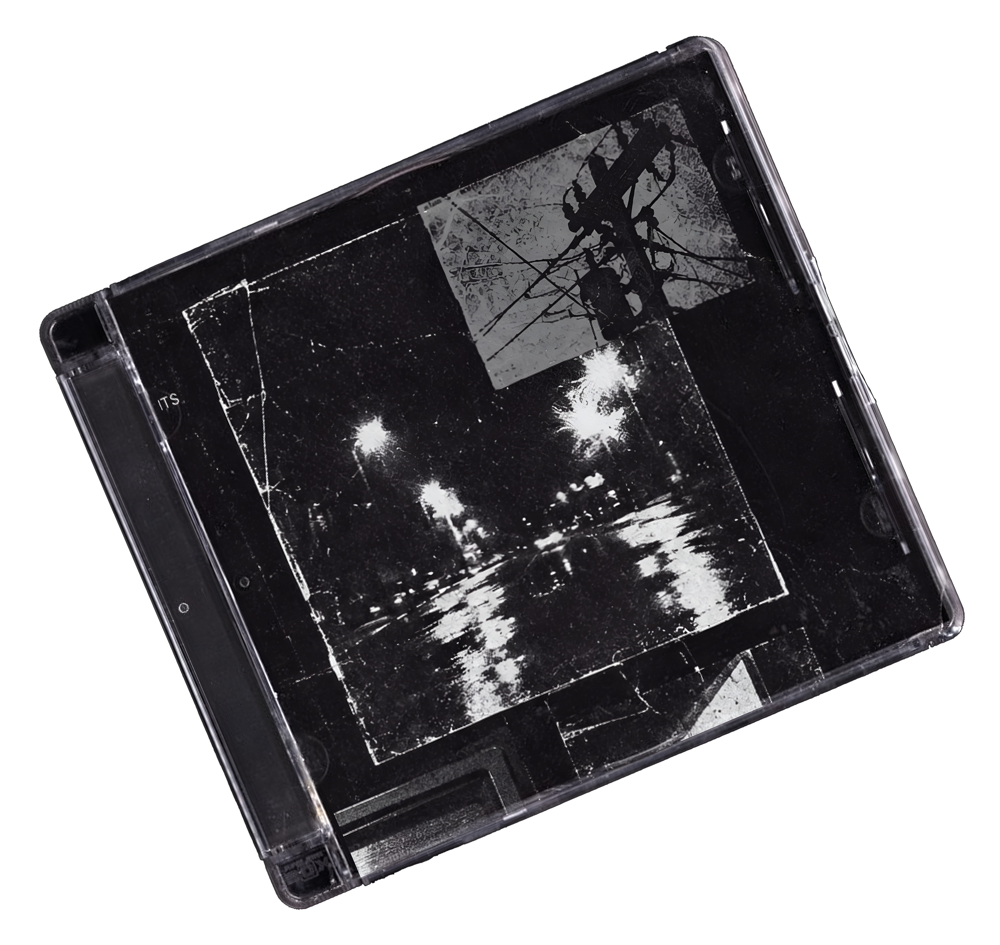
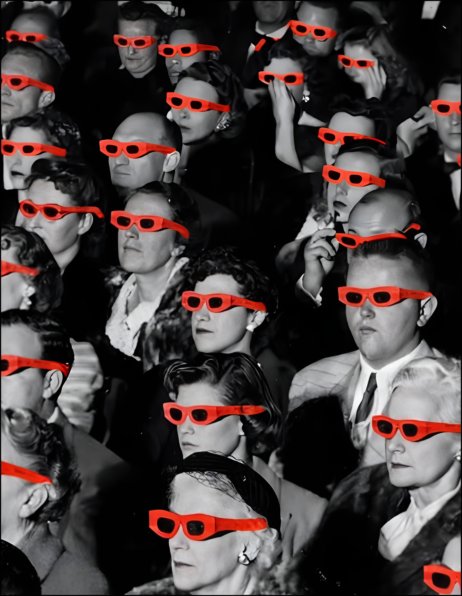
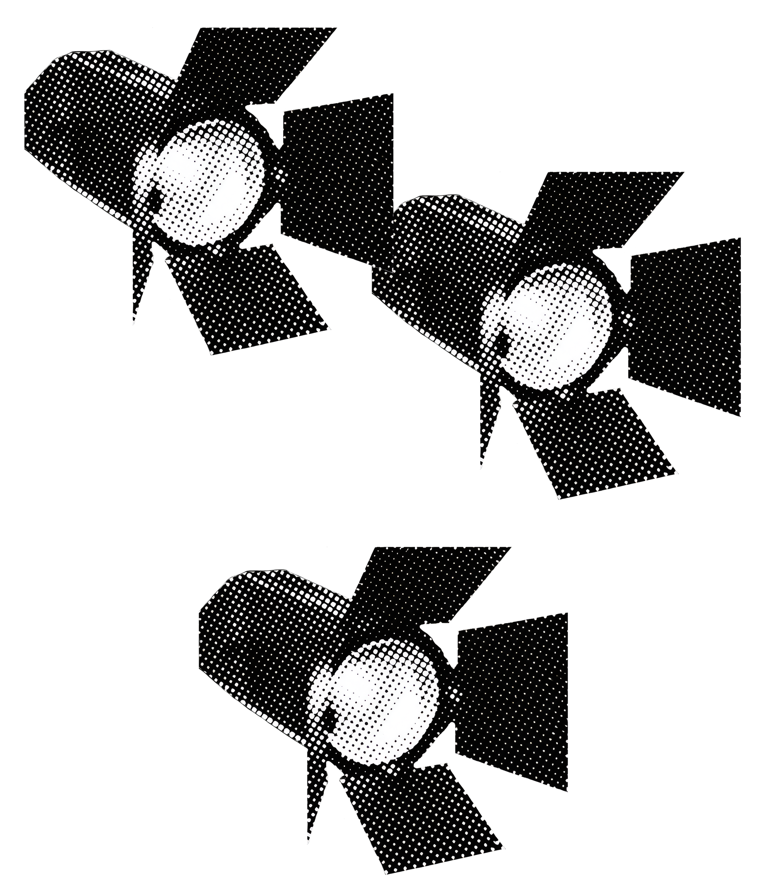
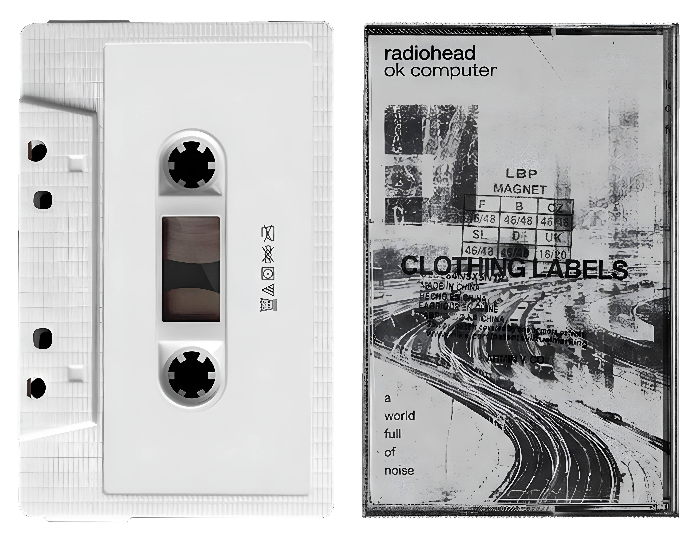

Маршруты
Статьи
Тесты

онлайн медиа
по
из фильмов
с маршрутами
местам
Маршруты
Статьи
Тесты
онлайн медиа
по
из фильмов
с маршрутами
местам
Готовые
киномаршруты
Места
съёмок
кино
Мы предлагаем готовые маршруты
по местам съёмок. Исследуй локации любимых фильмов без сложного
планирования.

Вне кадра
Платформа, где кино
встречается с реальностью.
Все
локации проверены
и объединены в удобные
маршруты
Здесь не нужно
часами искать
информацию
Достаточно выбрать фильм или город, открыть
готовый маршрут и отправиться в путь.
Вы сможете увидеть
места, которые
до этого
существовали
только на экране
Начни свой путь
С нами

Для тех, кому интересно узнать больше, мы публикуем статьи о местах съёмок и тесты о кино.
Перейти
Исследуй локации

Готовые
киномаршруты
Места
съёмок
кино
Открой любимый
фильм заново
теперь в реальном
мире с нами
Вам не нужно ничего искать и планировать, просто выберите историю
и отправляйтесь в путь, чтобы пережить кино заново, уже своими
глазами.
Начните своё путешествие
по местам съёмок уже сегодня
и
откройте кино с той стороны, которую вы ещё не видели.
Перейти

Created by
MILOVIDOVA NINA
THE END